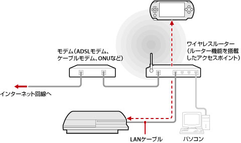
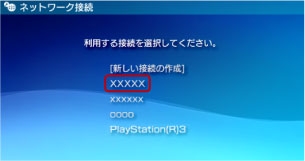

ネットワーク > リモートプレイをする（アクセスポイント経由）
リモートプレイをする（アクセスポイント経由）
PS3™をLANケーブルでアクセスポイントに接続し、PSP™のワイヤレスLAN機能を使って、アクセスポイント経由でPS3™に接続します。
一般的な接続例

ヒント
- ワイヤレスルーターは、アクセスポイントにルーター機能を搭載した機器です。アクセスポイントは、無線を使ってネットワークに接続するための装置です。ルーターは、1つのインターネット回線を複数の機器で共有するための装置です。
- モデムにルーター機能が搭載されている場合もあります。PS3™はルーター機能が搭載されている方の機器に接続してください。
- アクセスポイントとモデムの両方にルーター機能が搭載されている場合は、どちらか一方のルーター機能をオフにしてください。PS3™とPSP™は、同じネットワーク内で接続する必要があります。同時に2台以上のルーターを使うと、PS3™とPSP™が別々のネットワークに接続され、リモートプレイができない場合があります。
準備する（PS3™とPSP™）
はじめてリモートプレイをするときは、PSP™をPS3™に機器登録（ペアリング）する必要があります。 （設定）＞
（設定）＞ （リモートプレイ設定）＞［機器登録］で設定してください。
（リモートプレイ設定）＞［機器登録］で設定してください。
準備する（PSP™）
PSP™をアクセスポイントに接続するためのネットワーク接続を作成します。リモートプレイをするときに、すでに利用しているアクセスポイントを経由する場合は、新しくネットワーク接続を作成する必要はありません。ネットワーク接続の作成について詳しくは、PSP™のユーザーズガイドをご覧ください。
リモートプレイをする
1. |
PS3™で、 |
|---|---|
2. |
PSP™で、 |
3. |
［家庭内で接続する］を選ぶ。 |
4. |
接続先の一覧から、リモートプレイで使用するアクセスポイントの接続先を選ぶ。  接続に成功すると、PSP™にPS3™の画面が表示されます。 |
 （ネットワーク）から
（ネットワーク）から （リモートプレイ）を選ぶ。
（リモートプレイ）を選ぶ。 （リモートプレイ）を選ぶ。
（リモートプレイ）を選ぶ。ヒント
- リモートプレイは、アクセスポイントが電波を受信できる範囲内で使えます。
- PS3™のリモート起動を有効にすると、リモートプレイをするときに、待機中のPS3™の電源を自動的に入れることができます（Wake On LAN）。この場合は、手順1を行う必要はありません。詳しくは、（設定）＞（リモートプレイ設定）＞［リモート起動］をご覧ください。
リモートプレイを終了する
PSP™のPSボタン（HOMEボタン）を押し、［リモートプレイ終了］から［PS3™の電源を切って終了する］を選びます。
ヒント
ファイルのコピーやバックグラウンドダウンロードなど、PS3™で作業をしていてPS3™の電源を切りたくないときは、［PS3™の電源を切らないで終了する］を選びます。